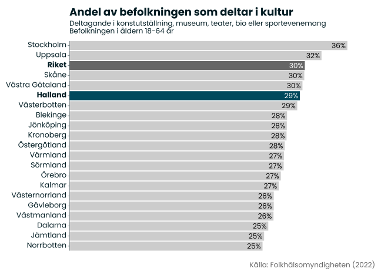
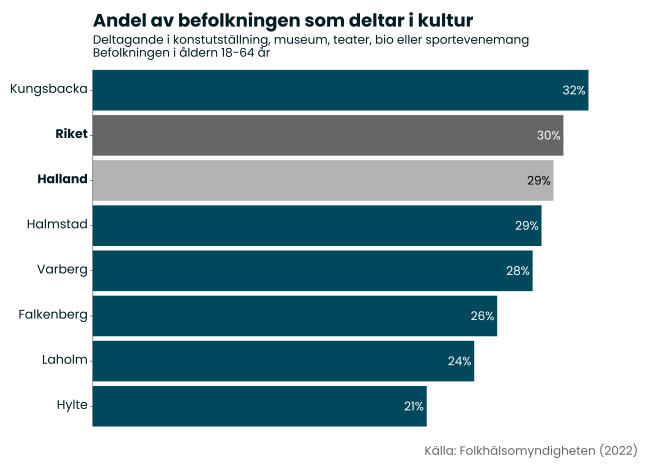

Kulturdeltagande
Om indikatorn
I tidigare kapitel har vi undersökt, utifrån olika perspektiv, i vilken utsträckning befolkningen deltar i olika delar av kulturlivet (eller har geografiska förutsättningar att göra det). För att komplettera bilden undersöker vi här i vilken utsträckning befolkningen själva rapporterar att de deltar i olika kulturaktiviteter.
Källa för statistiken är Folkhälsomyndighetens folkhälsoenkät, där respondenterna fått svara på frågan om de under de senaste 12 månaderna deltagit i en kulturaktivitet. I sammanhanget definieras kulturaktivitet som konstutställning, museum, teater, bio, eller sportevenemang.
Utfall
I Halland rapporterar 29 % av invånarna att de deltagit i en kulturaktivitet under de senaste 12 månaderna. Det är något lägre än riksgenomsnittet (30 %) men den femte högsta nivån i riket. De fem regioner med högst självrapporterat kulturdeltagande är Stockholm, Uppsala, Skåne, Västra Götaland och Halland. Med andra ord tycks det finnas ett samband mellan folkmängd och kulturdeltagande, då det är storstadsregionerna med angränsande län som har högst kulturdeltagande i landet.
En sannolik förklaring till att deltagandet är högre i befolkningsrika miljöer är att det finns ett större och mer diversifierat kulturutbud i dessa regioner. Dessutom kan kultur- och nöjesutbudet i sig vara en attraktivitetsfaktor som bidrar till att en region växer, samtidigt som befolkningsrika miljöer generellt erbjuder en större marknad för kulturskapare och kulturella och kreativa företag, vilket främjar en tillväxt av denna typ av verksamheter. Det blir med andra ord en slags självförstärkande effekt mellan befolkningstillväxt, kulturutbud och kulturdeltagande.
De regioner som har lägst kulturdeltagande är Norrbotten, Jämtland och Dalarna, som är tre jämförelsevis små regioner sett till befolkning. Sambandet mellan befolkning och kulturdeltagande är emellertid inte helt linjärt. Relativt små regioner såsom Blekinge och Västerbotten har exempelvis ett jämförelsevis högt deltagande. Men vi ska också poängtera att underlaget bygger på en enkätundersökning och att det är små skillnader mellan många regioner, varav flera sannolikt ligger inom felmarginalen.
På kommunnivå ser vi att Kungsbackas invånare, med ett deltagande på 32 %, är de som har högst deltagande i Halland. Utifrån tidigare resonemang om sambandet mellan befolkningsmängd och kulturutbud finns det i Kungsbacka goda förutsättningar för ett högt kulturdeltagande, givet den goda tillgängligheten till utbudet i Göteborgsregionen. I fallande ordning kommer sedan Halmstad (29 %), Varberg (28 %), Falkenberg (26 %), Laholm (24 %) och Hylte (21 %).
